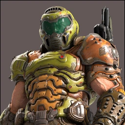
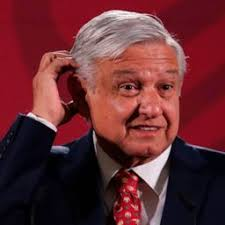
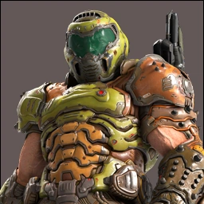
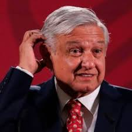
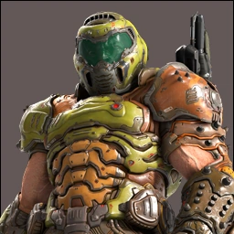
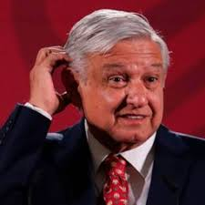

Follow
Juan Manuel Barajas Gómez
@MB_lml
Ejecutivo de día, programador de noche. Amante de la tecnología y las peliculas.
1.5M
Siguiendo
3.7M
Siguen
 
Doom Slayer, James Hetfield y 1,500 más de las cuentas que sigues siguen a esta cuenta

 


